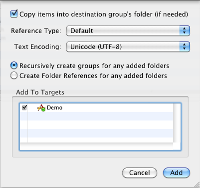
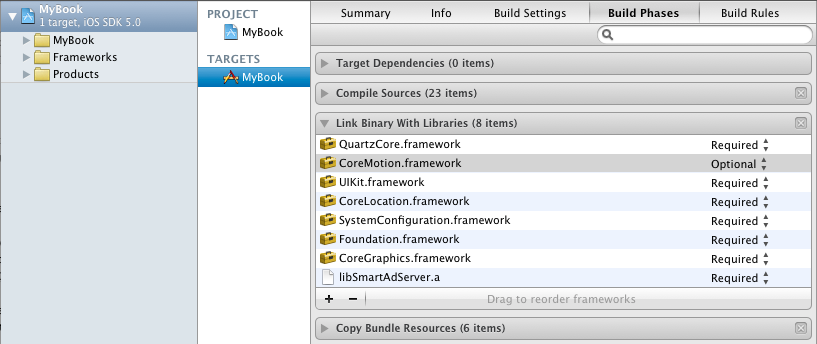
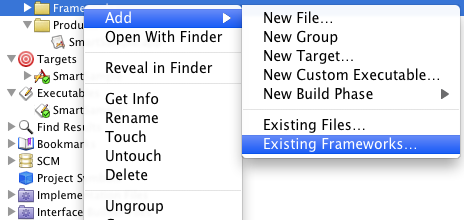
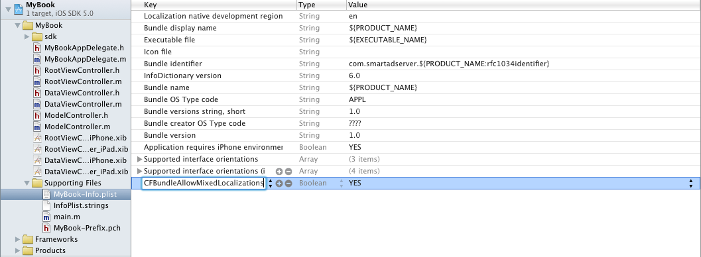

Getting Started with the Smart AdServer iOS SDK
Introduction
Welcome to the Smart AdServer iOS SDK v3.2.2.
This document is a quick guide to install the iOS SDK in your application.
There are 3 classes that you will use :
- the SASBannerView and SASInterstitialView classes (inheriting from the SmartAdServerView class (that itself inherits from UIView)) will be responsible for displaying the ad;
- the SmartAdServerAd class (inheriting from NSObject) represents the ad object.
And a protocol :
- the SmartAdServerViewDelegate protocol : The protocol methods allow the delegate to be aware of the ad-related events. You should use it to handle your app’s or the ad’s behavior like adapting your view size depending on the ad being displayed or not. The delegate of a SASBannerView or SASInterstitialView object must adopt the SmartAdServerViewDelegate protocol.
1. Installing the SDK in your project
The first thing you need to do is to import all the files in your project.
Step 1: Drag the following file and folders into your project:
- libSmartAdServer.a : the compiled framework with all the code
- headers : the documented headers with interfaces and protocols.
- sas.bundle : the images and the localized files for the library. You can modify those files to adapt the graphic elements of the SmartAdServer SDK, the texts displayed, and to add additional languages to your application (default provided languages : english and french)
Make sure that “Copy items into destination group’s folder (if needed)”, and that all your targets are checked.

Step 2: As our library needs some frameworks to work, your project should be linked against:
- the CoreLocation framework
- the SystemConfiguration framework
- the QuartzCore framework
- the CoreMotion framework
- the MediaPlayer framework
The CoreMotion framework should be weak linked if you want to support iOS versions prior to 4.0 :
For Xcode 4 :
In the project navigator view, click on your project, select your target in the editor, click on the “Build Phases” tab. Add the libraries with the “+” button in the “Link Binary With Libraries”. For the CoreMotion framework, change the “Required” property to “Optional”

For Xcode 3 :
Right click on the “Frameworks” group in your project, choose “Add” => “Existing Frameworks…”, and add the three frameworks mentionned above.
Select your target, click on Info, in Linked Library changed Required to Weak for the CoreMotion framework.

Our library includes the localization files in a bundle. In order to allow Cocoa to load those files, edit your Project-Info.plist file to add a row, set the key to CFBundleAllowMixedLocalizations and the value to YES.

Forgeting this step will disable the internationalization of the SDK.
2. Displaying an ad in your application
Import SASBannerView.h if you want to display a banner or a toaster and/or SASInterstitialView.h if you want to display an interstitial in the class file that will be responsible for displaying the ad :
#import "SASBannerView.h"
#import "SASInterstitialView.h"
And the delegate of a SASBannerView or SASInterstitialView object must adopt the SmartAdServerViewDelegate protocol :
@interface MyViewController : UIViewController <SmartAdServerViewDelegate>
Both SASBannerView and SASInterstitialView classes inherit from the SmartAdServerView class, so to set your Application’s site ID, use [SmartAdServerView setSiteID:] This step only needs to be done once in your application’s life cycle, but it’s required, so that Smart AdServer can collect ad display data. Typically you can call setSiteID: in your application:didFinishLaunchingWithOptions: method :
- (BOOL)application:(UIApplication *)application didFinishLaunchingWithOptions:(NSDictionary *)launchOptions {
[SmartAdServerView setSiteID:123456];
// Your app initialization code
return YES;
}
At this point, for development purpose, you can also call two other static method :
- [SmartAdServerView enableLogging] will allow you to get feedback for debugging in case of an error, or to know which URL is called, etc. This should be removed in production (logs cost some CPU cycles).
- [SmartAdServerView enableTestMode] can be used if you don’t have proper ads configured on the server side. This will display a generic ad, and you’ll be able to work on the integration without having to wait for a proper server-side ad configuration. This MUST be removed in production, because if not, only the generic ad will be displayed.
Now you can start to create some ad placements with the help of the Samples page.
Warning : In the SmartAdServerViewDelegate methods, the adView object is a SmartAdServerView instance. As SASBannerView and SASInterstitialView inherit from SmartAdServerView, you can check if adView is a banner or an interstitial by checking the following :
if ([adView isKindOfClass:@"SASBannerView"]) {
//adView is a banner
//Do banner stuff
}
else if ([adView isKindOfClass:@"SASInterstitialView"]) {
//adView is a interstitial
//Do interstitial stuff
}
Before submitting to Apple, you should make sure that you did everything right and didn’t forget something by checking the Checklist page.
3. Going further
Obviously, they are many other things you can do, and they are covered in the SASBannerView and SASInterstitialView Class References. Here are some examples (see the links for more information) :
- Geo-targeting your ads : [SmartAdServerView setCoordinate:];
- Refreshing a banner ad : [SASBannerView refresh];
- Displaying custom local ads (in case of download failure) : [SASBannerView displayThisAd:]; or [SASInterstitialView displayThisAd:];
- Removing a interstitial view : [SASInterstitialView dismiss];